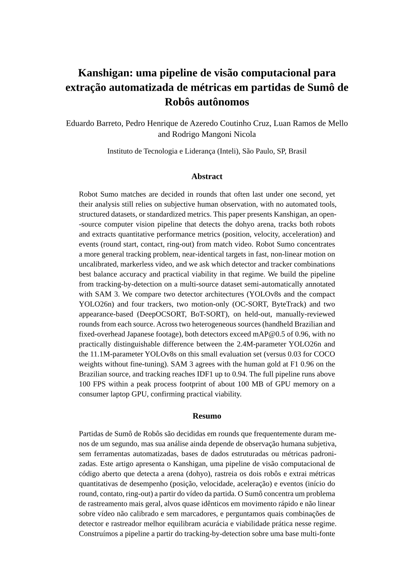
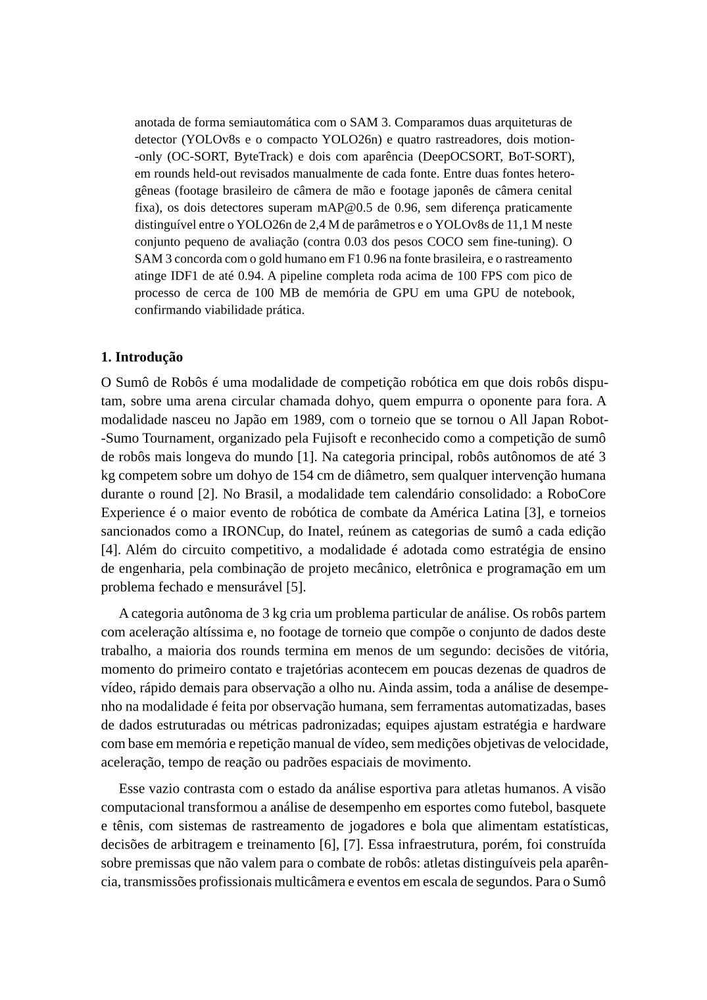
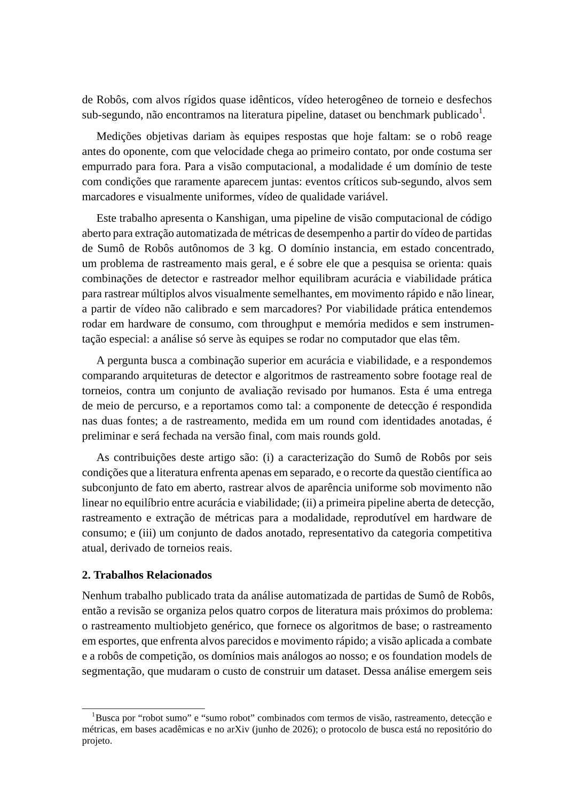

Kanshigan
Pipeline de visão computacional para medir partidas de Sumô de Robôs autônomos
Eduardo Barreto · Pedro Henrique de Azeredo Coutinho Cruz · Luan Ramos de Mello
Orientador: Rodrigo Mangoni Nicola · Instituto de Tecnologia e Liderança (Inteli), São Paulo
Da modalidade até onde a pesquisa está hoje
O domínio e o problema
O que é Sumô de Robôs, e por que medir uma partida é difícil.
Metodologia e resultados
A pipeline de visão, e o que já roda sobre footage real.
O artigo
O que já está escrito e documentado.
Próximos passos e publicação
O que falta, e para onde o trabalho vai.
O round acaba em menos de um segundo
- Dois robôs autônomos de até 3 kg
- Arena circular (dohyo) de 154 cm
- Aceleração altíssima, desfecho em poucos quadros

Rápido demais para o olho, e ninguém mede
Hoje
A análise da modalidade é observação humana: estratégia e hardware ajustados por memória e replay manual. Sem ferramenta, dataset ou métrica padronizada.
Nos esportes humanos
Visão computacional já alimenta estatística e arbitragem, mas sobre premissas que aqui não valem: atletas distinguíveis, broadcast multicâmera, eventos em segundos.
Para Sumô de Robôs, nenhuma pipeline, dataset ou benchmark publicado. Confirmado por busca sistemática, registrada no repositório.
Seis condições caracterizam o domínio
Colisões e giros quebram a hipótese de velocidade constante
Dois robôs quase idênticos: a identidade vem do movimento, não do visual
O round decide-se em poucos quadros; perder dez custa a partida
Da câmera de mão oblíqua à cenital fixa, sem padrão de captura
Sobre vídeo gravado, depois da luta, e não necessariamente em tempo real
O regulamento e o acervo de vídeo não têm fiduciais
Cada vizinho cobre parte; nenhum o regime inteiro
| Trabalho | C1 | C2 | C3 | C4 | C5 | C6 |
|---|---|---|---|---|---|---|
| ByteTrack / OC-SORT | parcial | parcial | — | — | — | cobre |
| DanceTrack | cobre | cobre | — | — | — | cobre |
| SportsMOT | parcial | cobre | parcial | — | — | cobre |
| SSL-Vision (RoboCup) | cobre | cobre | cobre | — | — | não |
| Kanshigan (este trabalho) | cobre | cobre | cobre | cobre | cobre | cobre |
Qual combinação de detector e rastreador equilibra acurácia e viabilidade para alvos quase idênticos, em movimento rápido, sobre vídeo não calibrado e sem marcadores?
Oito estágios, cada saída avaliável contra o gold
SAM 3 virou anotador validado, não pipeline
- Inviável na inferência (2 FPS, 7 GB): viramos a peça, ele anota offline o treino.
- Multi-fonte: câmera de mão BR e cenital fixa JP, os dois extremos.
- Divisão por round, nunca por quadro; gold revisado à mão.
| Subconjunto | Clips | BR | JP |
|---|---|---|---|
| Treino | 14 | 423 | 202 |
| Validação | 2 | 59 | 15 |
| Gold (teste) | 2 | 59 | 57 |
O que já roda sobre footage real
A mesma pipeline, em contextos diferentes
Um artigo completo, com versões em paralelo
- ✓ Introdução problema, lacuna, pergunta
- ✓ Trabalhos relacionados + matriz de condições
- ✓ Metodologia pipeline de 8 estágios
- ✓ Resultados parciais detecção, rastreamento, viabilidade
- ✓ Discussão e conclusão



Onde o artigo vai, e por quê
WVC
Workshop de Visão Computacional (SBC). Escopo direto: detecção e rastreamento aplicados, em português.
Preprint no arXiv
URL citável já na banca, independente da janela do evento.
Versão internacional
Versão em inglês (IEEE) mantida em paralelo, para um venue internacional.
O que fecha na versão final
Assumido no paper
- Gold pequeno: números de ordem de grandeza, sem intervalo de confiança.
- Calibração cm/pixel é aproximação sob perspectiva oblíqua.
- Dos eventos, só o início de round dispara confiável.
Próximos passos
- Mais rounds gold com identidade, para fechar o rastreamento.
- Retificação por homografia, para validar a cinemática.
- Conjunto de calibração próprio para contato e ring-out.
O nível mundial é o teste mais duro
Três contribuições, todas medidas e públicas
Domínio caracterizado
Seis condições, com o recorte científico no par em aberto: aparência uniforme e movimento não linear.
Primeira pipeline aberta
mAP > 0.96, IDF1 até 0.94, >100 FPS em ~100 MB, reprodutível em hardware de consumo.
Dataset anotado
Multi-fonte, de torneios reais, com anotador validado (F1 0.96) e divisão sem vazamento.
Detecção respondida nas duas fontes; rastreamento preliminar. Fecha na versão final com mais rounds gold.